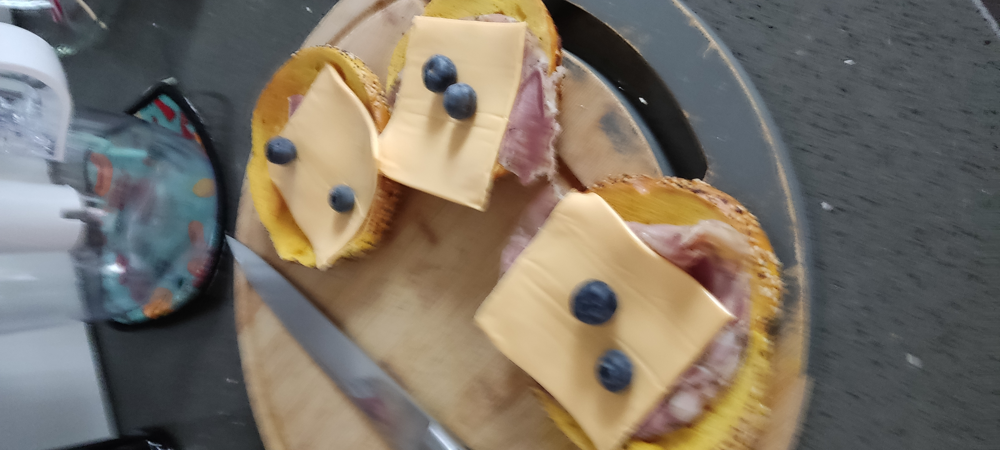
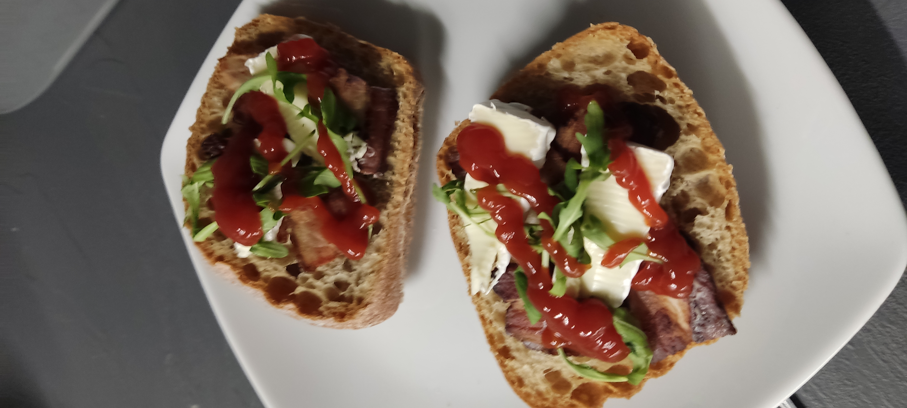
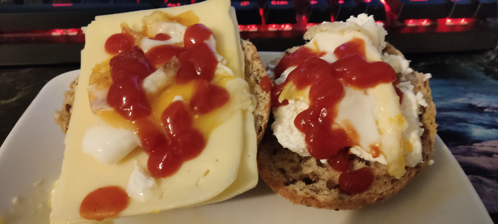
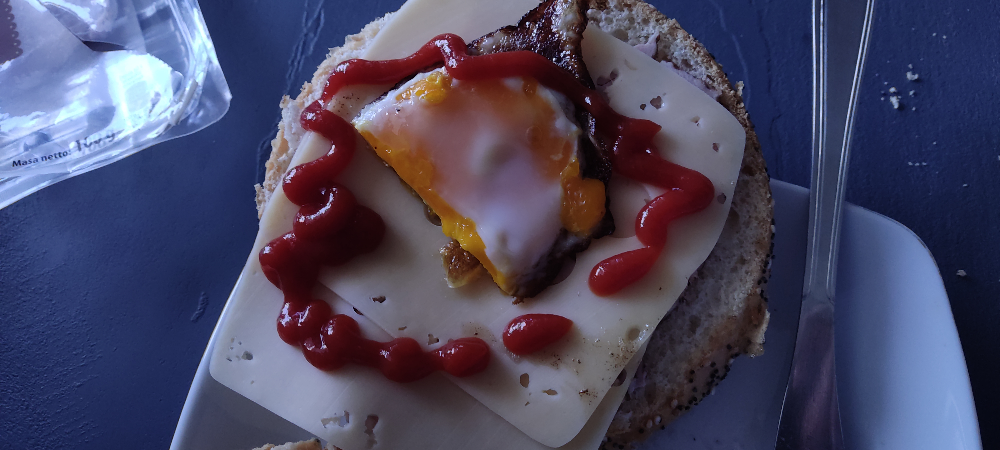
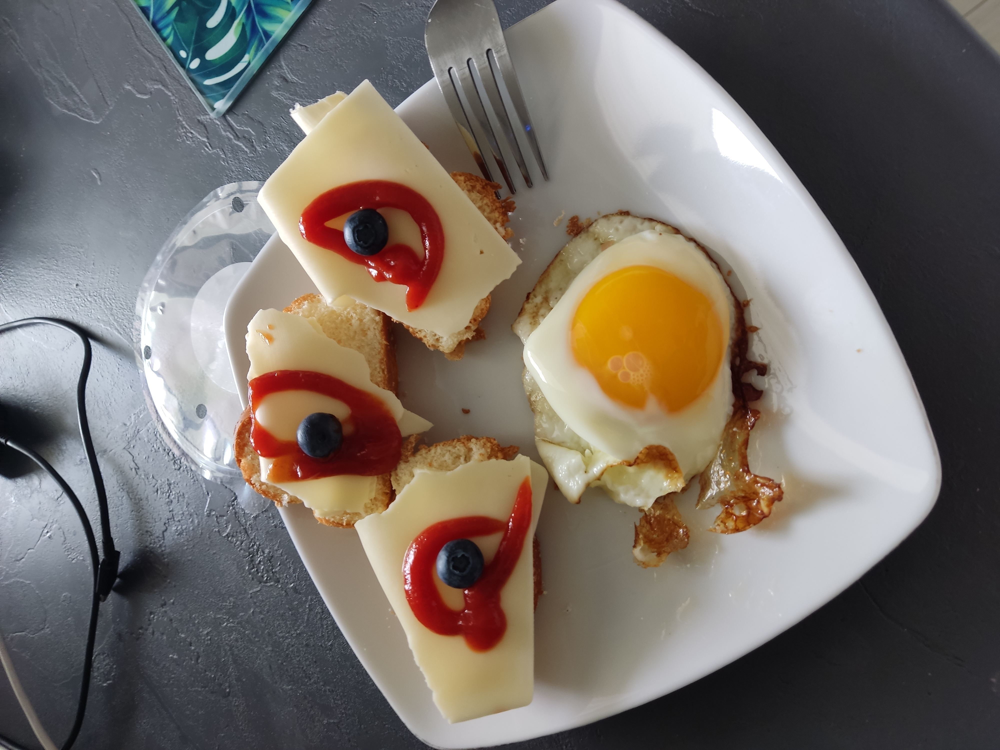
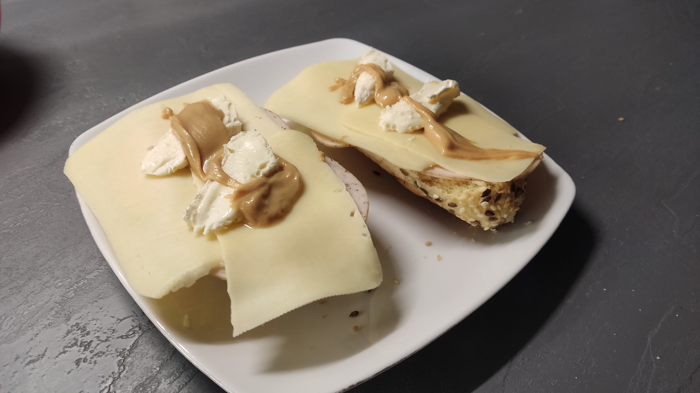

Zauważyłem, że mam (nie)talent do kanapek. Oto kilka z nich
Jajeczne - standard

Prosta jajeczna kanapka
- Chlep
- Szynka
- Ser żółty (krojony)
- Pomidory (kawałki!)
- Jajko na twardo (z lodówki)
- KetchupTM
Ryba z dodatkiem

Dobra kanapka jak sie kanapki z rybkami z konserwy sie znudzą
- Chlep
- Ryba z sosem pomidorowym z konserwy
- Ser Camember
Brak sera

Nie ma sera? To jest to:
- Chlep
- Szynka
- Camember
- KetchupTM
Stany specjal
Solucja na sztuczne jedzenie
- Chlep
- Salami
- Sztuczny ser żółty
- Borówki
Wygląda jak wege ale nie jest
Takie o
- Chlep
- Spalony boczek
- Rukola
- Camember
- KetchupTM
Jajko ale płyn
Dobre na wode338
- Chlep
- Ser żółty / Twaróg półtłusty
- Nieścięte jajko sadzone
- KetchupTM
Klasyk sadzony

- Chlep
- Szynka
- Ser żółty
- Spalone jajko sadzone
- KetchupTM
Po imprezowy GLĄ

Dobre na impreze, a raczej po
- Chlep
- Bułka
- Serek wiejski
- Ketchup
- Sałatka
- Jajko sadzone
Łapa
Proste
- Chałwa
- Masło
- Ser żółty
- Borówki
- KetchupTM
- Jajko sadzone
Masło orzechowe
Czuć tylko masło orzechowe
- Chlep
- Majonez
- Szynka
- Gouda
- Camember
- Masło orzechowe